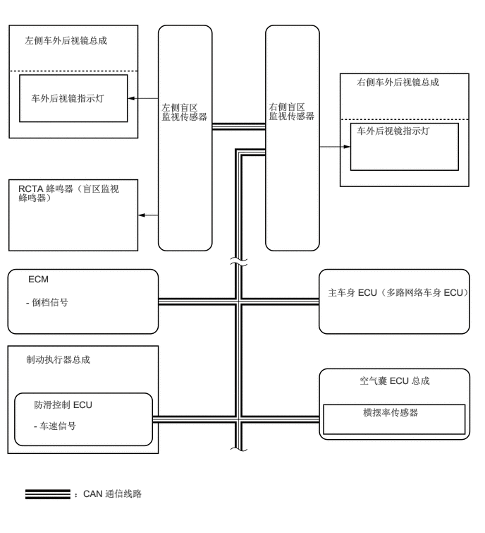

0.365,0.51 1.813,0.875
1.438,0.354
10
false
左侧车外后视镜总成
0.458,1.365 1.885,1.75
1.417,0.375
10
false
车外后视镜指示灯
2.385,1.5 3.083,2.031
0.688,0.521
10
false
左侧盲区监视传感器
3.969,1.49 4.688,2.052
0.708,0.552
10
false
右侧盲区监视传感器
5.271,1.125 6.719,1.49
1.438,0.354
10
false
右侧车外后视镜总成
0.271,2.698 1.865,3.083
1.583,0.375
10
false
RCTA 蜂鸣器（盲区监视蜂鸣器）
0.385,4.375 1.49,4.604
1.094,0.219
10
false
- 倒档信号
0.417,4.031 2.156,4.417
1.729,0.375
10
false
ECM
0.385,5.219 2.052,5.615
1.656,0.385
10
false
制动执行器总成
0.5,5.885 1.656,6.094
1.146,0.198
10
false
防滑控制 ECU
0.5,6.198 1.979,6.401
1.469,0.193
10
false
- 车速信号
4.844,4.229 7.031,4.771
2.177,0.531
10
false
主车身 ECU（多路网络车身 ECU）
5.313,5.531 6.927,5.74
1.604,0.198
10
false
空气囊 ECU 总成
5.365,6 6.406,6.203
1.031,0.193
10
false
横摆率传感器
1.094,7.198 2.865,7.401
1.76,0.193
10
false
：CAN 通信线路
5.271,1.844 6.708,2.208
1.427,0.354
10
false
车外后视镜指示灯